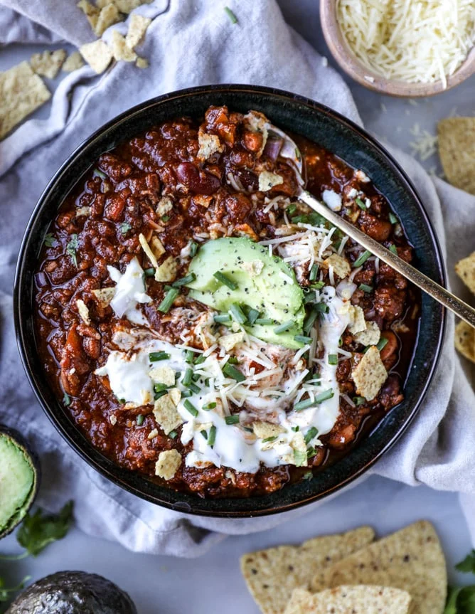

Game Day Chilli

Description
This chilli is my favourite variation i've made - it's a
good way to use whatever crap leftover beers people leave
at my house
Can be served with rice - i prefer to have over jacket potatoes
Ingredients
- 2 tbsp olive oil
- 2 tsp sea salt
- 1 tsp black pepper
- 500g beef mince
- 2 small red onions, diced
- 1 red bell pepper, sliced
- 4 garlic cloves, grated
- 1 tbsp sliced jalapenos
- 1 tin tomato paste
- 1 tin tomatoes
- 1 bottle beer
- 1 can kidney beans
- (optional) drizzle of honey
Spices
- 2 tsp smoked paprika
- 1/2 tsp cayenne
- 2 tsp ground coriander
- 1 tbsp ground cumin
- 1 tbsp oregano
- 1/2 tsp chilli flakes
- 1/2 tsp ground cinnamon
- 2 tsp cumin seeds
- 2 tsp coriander seeds
Home